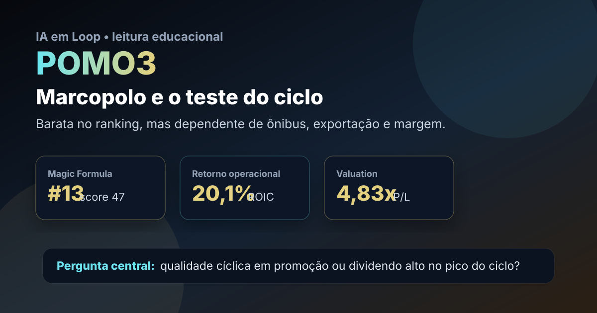

24/07: POMO3, Marcopolo e o teste do ciclo automotivo
Depois de uma publicação sobre stock americana, a leitura volta para a B3 com um nome fora da custódia atual: POMO3, ação ordinária da Marcopolo. A pergunta central é objetiva: o ranking está apontando uma indústria eficiente ainda barata ou um ativo que parece barato porque o ciclo de ônibus e exportação pode estar perto do pico?

POMO3 combina múltiplos baixos, retorno operacional alto e dividendo relevante; o risco é confundir ciclo favorável com vantagem permanente.
Resposta curta: barata, mas cíclica
No ranking Magic Formula do IA em Loop, POMO3 aparece em 13º lugar, com ROIC de 20,1%, earnings yield de 16,2% e score 47. Na consulta ao Fundamentus em 24/07/2026, a ação aparecia a R$ 4,82, com P/L de 4,83, P/VP de 1,48, PSR de 0,67, margem EBIT de 15,8%, ROIC de 20,5%, ROE de 30,7% e rendimento em dividendos de 19,6%.
A combinação é forte para uma tela quantitativa: lucro barato, retorno sobre capital acima da média e distribuição elevada. Mas POMO3 não é uma tese defensiva pura. Marcopolo depende de demanda por ônibus, crédito, renovação de frota, custos industriais, exportação, câmbio e disciplina de margem. Por isso, o ativo merece estudo, não conclusão automática.
Por que POMO3 entrou no radar
POMO3 entrou no radar por combinar preço baixo, retorno sobre capital elevado e uma tese industrial fácil de acompanhar: produção de ônibus, carteira de pedidos, margem operacional, exportações e disciplina de caixa. O papel estava fora da custódia, então a análise servia como teste de mérito econômico antes de qualquer conclusão prática.
No método, o atrativo é o equilíbrio entre preço e qualidade operacional. Um ROIC acima de 20% sugere que a empresa transforma capital em resultado de forma eficiente. Um P/L perto de 5 sugere que o mercado não está cobrando caro pelo lucro atual. O ponto fraco é que lucro de indústria cíclica pode parecer barato justamente quando está em fase favorável.
O que as notícias recentes acrescentam
Leituras públicas recentes via Google Notícias indicaram lucro da Marcopolo em alta de 9% no 1T26. Esse dado ajuda a explicar por que a ação aparece bem nos filtros: a operação segue gerando lucro mesmo em um ambiente de juros ainda exigente.
A pergunta analítica do dia é: POMO3 é uma barganha industrial ou um dividendo alto no topo do ciclo? A resposta do IA em Loop é: os números atuais justificam radar, mas a tese só melhora se margem, carteira de pedidos e geração de caixa forem sustentáveis nos próximos trimestres. Sem essa confirmação, o rendimento em dividendos pode ser mais retrovisor do que promessa.
POMO3 é candidata de estudo para fora da custódia: barata na tela, rentável no capital e com proventos fortes. O cuidado é tratar como indústria cíclica, não como renda previsível. O próximo balanço deve responder se o lucro baixo em múltiplo é oportunidade ou normalização a caminho.
O que favorece e o que ameaça a tese
Favoráveis
• P/L baixo para uma empresa com lucro recente ainda positivo.
• ROIC acima de 20%, sinal de eficiência operacional.
• ROE de 30,7%, reforçando retorno elevado sobre patrimônio.
• Dividend yield alto, útil para triagem, desde que não seja extraordinário demais.
Desfavoráveis
• Demanda por ônibus e carrocerias depende de ciclo econômico e crédito.
• Exportação e câmbio podem ajudar ou pressionar margem.
• Dividendo alto pode cair se lucro normalizar.
• A tese conversa com outros nomes ligados a veículos; concentração temática precisa ser evitada.
Checklist para acompanhar
| Indicador | O que precisa acontecer | Leitura se falhar |
|---|---|---|
| Margem EBIT | Ficar saudável perto do patamar atual de 15,8% | O ciclo pode estar perdendo força |
| ROIC | Seguir acima de 20% ou cair pouco | A qualidade operacional fica menos evidente |
| Dividendos | Distribuição caber no caixa recorrente | Rendimento alto vira dado de passado |
| Carteira de pedidos | Mostrar demanda firme no Brasil e no exterior | O P/L baixo pode antecipar queda de lucro |
Conclusão
POMO3 é o tipo de ação que a Magic Formula foi feita para colocar no radar: parece barata, rentável e fora do excesso de atenção dos grandes temas do mercado. O ponto é que Marcopolo não vende uma assinatura recorrente; vende produtos industriais ligados a investimento, mobilidade, frota e exportação.
A leitura do IA em Loop para hoje é: POMO3 merece estudo como candidata fora da custódia, mas a confirmação depende de margem, demanda e caixa após o ciclo favorável. Se esses três pontos continuarem fortes, o P/L baixo pode ser oportunidade. Se normalizarem rápido, o mercado pode estar apenas antecipando que o lucro atual é difícil de repetir.